전체 구성
태블릿은 화면과 입력만 담당합니다. 코드, 컴파일러, 엔진은 모두 집 PC에 있습니다.
📱 태블릿
- 브라우저
vscode.dev - 또는 VS Code + Remote - Tunnels
- 편집, 저장, 빌드 명령
텍스트만 전송
☁️ Microsoft 터널 중계
- GitHub 계정으로 인증
- 다른 네트워크 대역이어도 접속
- 포트포워딩, VPN 불필요
(상시 실행)
🖥️ 집 PC (main-pc)
- VS Code 터널 서비스
- UE 5.8.4 + UnrealBuildTool
- MSVC 14.44 컴파일
- 프로젝트
E:\UE\MyProject
주요 결정 사항
진행하면서 바꾼 선택과 그 이유입니다.
| 결정 | 이유 |
|---|---|
| WSL 대신 Windows에 직접 설치 | WSL2는 Vulkan GPU 가속이 불안정해서 언리얼 에디터를 쓰기 어려움 |
| 태블릿에는 엔진을 설치하지 않음 | 8GB RAM으로는 에디터 실행이 불가. 엔진은 32GB 집 PC에서만 실행 |
| RDP 대신 VS Code Remote Tunnels | 테더링 데이터 절약. 코드 작업은 텍스트만 오가서 데이터를 거의 쓰지 않음 |
| 화면이 필요할 때만 Moonlight 스트리밍 | 720p, 30fps, 2Mbps로 제한하면 시간당 약 0.9GB 수준으로 예측 가능 |
| UE 5.4.4를 지우고 5.8.4 설치 | 5.4는 VS 2026을 지원하지 않음. 5.8은 VS 2026을 정식 지원 |
| MSVC v143 14.44 빌드 도구 추가 | VS 2026 기본 컴파일러(14.50) 외에 언리얼이 검증한 툴체인을 확보 |
프로젝트 경로 E:\UE | 기본 경로가 OneDrive 동기화 폴더이고 한글(문서)이 포함되어 빌드 문제 위험 |
| 설치 옵션 최소화 | 디버그 심볼(53GB), 다른 플랫폼 제외 → 다운로드 11.6GB, 설치 29.5GB |
1Visual Studio 2026 설치
🖥️ 집 PC언리얼 C++ 빌드에 필요한 컴파일러와 SDK를 설치합니다.
- 워크로드에서 C++를 사용한 게임 개발을 선택합니다.
- 선택 구성 요소에서 Windows 11 SDK (10.0.26100)와 Visual Studio Tools for Unreal Engine이 체크됐는지 확인합니다. Unreal Engine 설치 관리자는 런처가 있으니 해제합니다.
- 개별 구성 요소 탭에서
14.44로 검색하고, MSVC v143 - VS 2022 C++ x64/x86 빌드 도구 (v14.44-17.14) 하나만 추가합니다. ATL, MFC, Spectre, ARM 항목은 필요 없습니다.
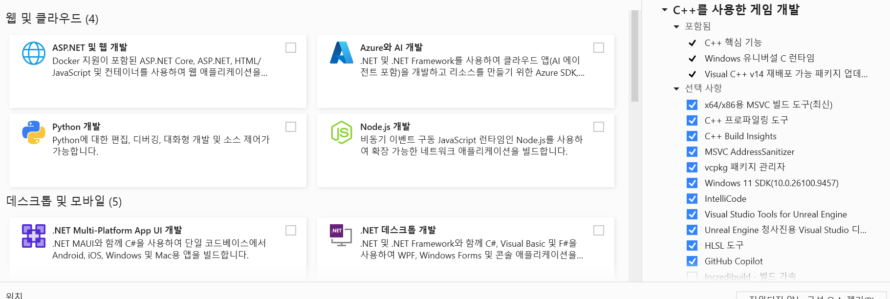

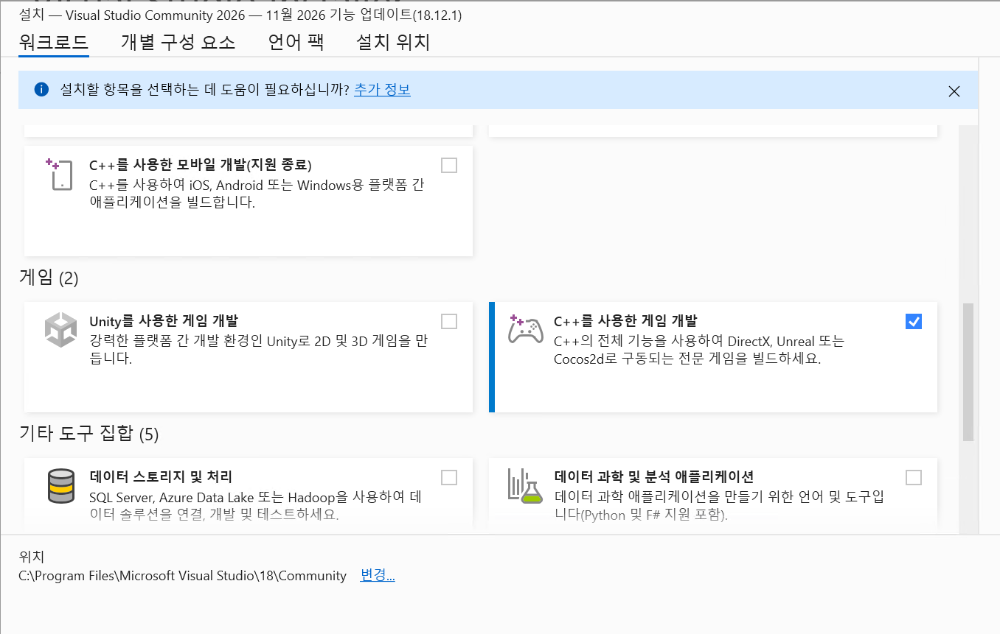


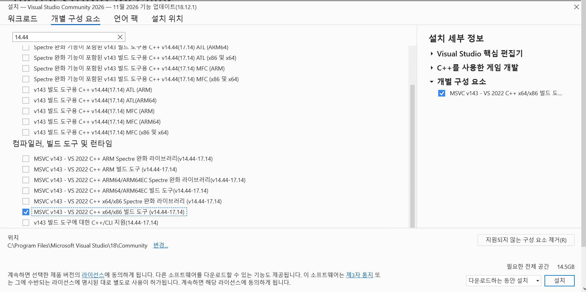


2Unreal Engine 5.8.4 설치
🖥️ 집 PCEpic Games Launcher에서 엔진 버전을 교체합니다.
- 라이브러리 → 엔진 버전 옆
+→ 버전을 5.8.4로 선택하고 설치합니다. 5.9 Preview는 실습용으로 피했습니다. - 설치 옵션에서 코어 컴포넌트, 템플릿 & 피처 팩, 엔진 소스만 남깁니다. 메타휴먼, 디버깅 심볼(53GB), 모든 타깃 플랫폼은 해제합니다.
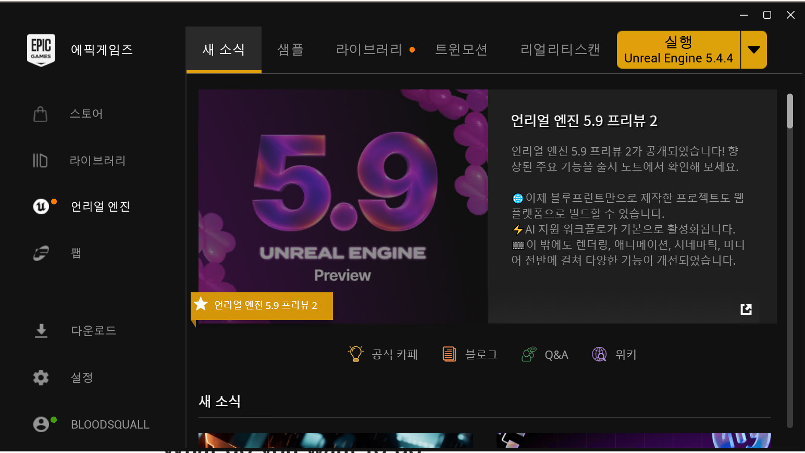


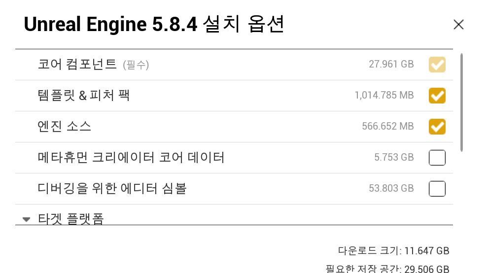

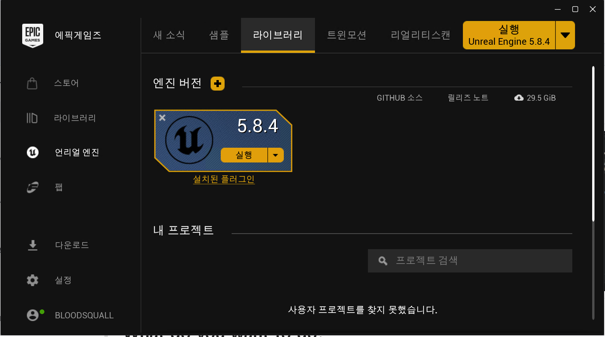
3C++ 프로젝트 만들기
🖥️ 집 PC5.8에서는 메뉴 이름이 조금 바뀌었습니다.
- 홈 패널의 ⊕ 새 프로젝트를 누릅니다. 위쪽의 "게임" 버튼은 학습 자료 카테고리일 뿐입니다.
- 게임 → 기본 템플릿을 선택합니다. 예전의 "공백(Blank)"이 5.8에서 "기본"으로 바뀌었습니다. Intro To Unreal은 블루프린트 전용이라 C++ 선택지가 없습니다.
- 프로젝트 디폴트를 C++로 바꾸고, 위치는
E:\UE, 이름은MyProject로 정합니다.
C:\Users\…\OneDrive\문서\Unreal Projects는 OneDrive가 빌드 임시 파일(수 GB)까지 동기화하고, 한글 경로 때문에 빌드 오류가 날 수 있습니다.
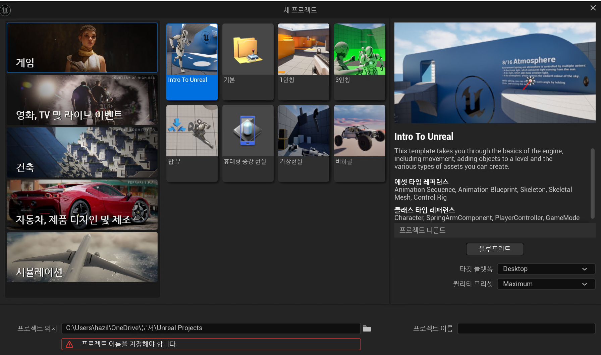

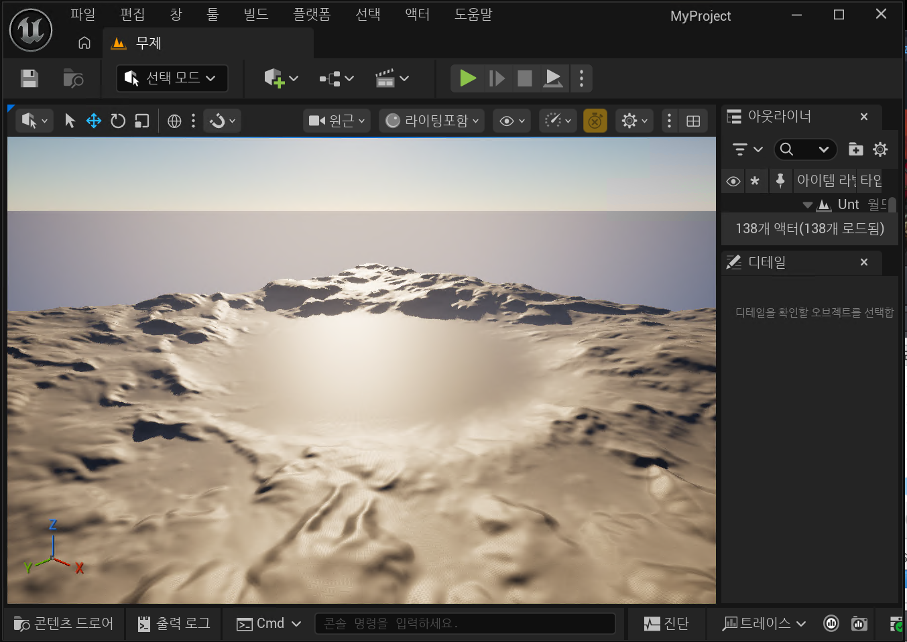
4언리얼 ↔ VS Code 연동
🖥️ 집 PC언리얼이 VS Code용 설정 파일(자동완성, 빌드 작업)을 만들게 합니다.
- 언리얼 에디터 편집 → 에디터 개인설정 → 일반 → 소스 코드에서 소스 코드 에디터를 Visual Studio Code로 바꾸고 에디터를 재시작합니다.
- VS Code에 C/C++ (Microsoft) 확장을 설치합니다.
- 언리얼 툴 → Visual Studio Code 프로젝트 생성을 실행합니다.
- 프로젝트 폴더에
.vscode폴더와MyProject.code-workspace가 생기면 완료입니다. 이후 언리얼 에디터는 닫습니다. 에디터가 켜져 있으면 외부 빌드가 실패합니다.
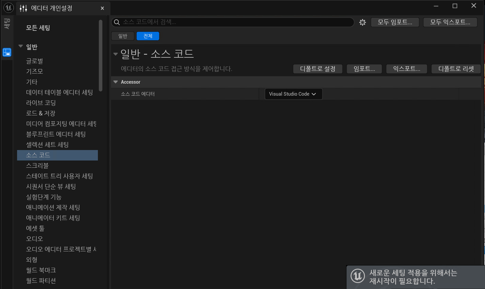
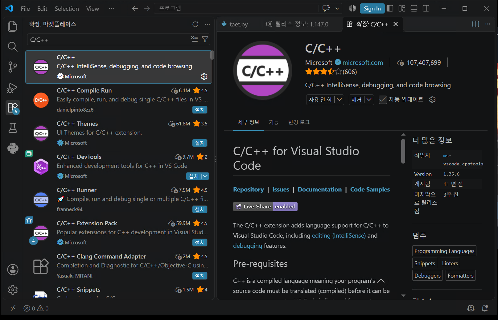
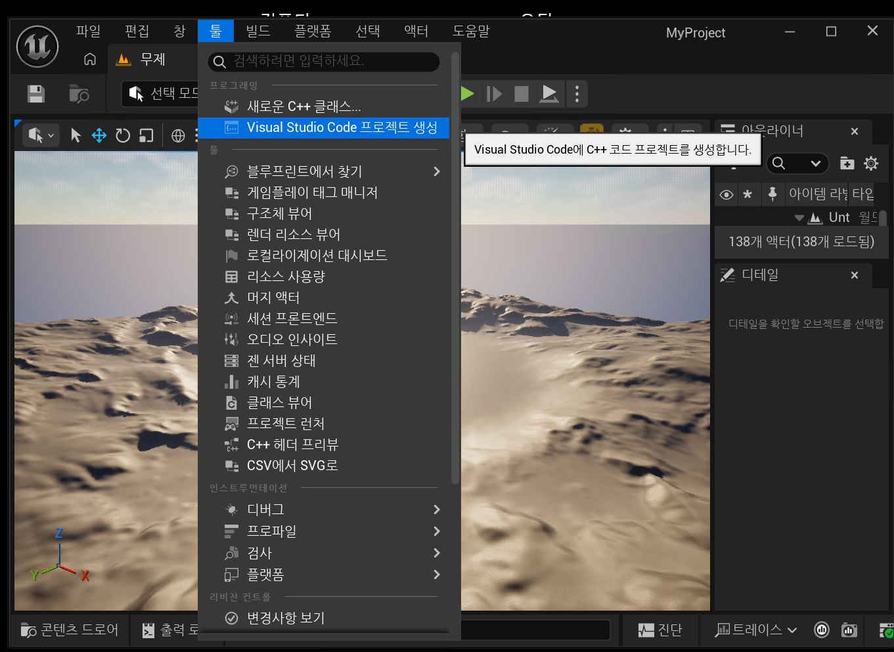

메뉴가 안 보일 때: 명령어로 생성
cd E:\UE\MyProject
$UE = "C:\Program Files\Epic Games\UE_5.8"
$PROJ = "$PWD\MyProject.uproject"
$UBT = "$UE\Engine\Binaries\DotNET\UnrealBuildTool\UnrealBuildTool.exe"
& $UBT -projectfiles -project="$PROJ" -game -vscode5Remote Tunnel 켜기
🖥️ 집 PC집 PC를 어디서든 접속할 수 있는 원격 개발 서버로 만듭니다.
Ctrl+Shift+P→ Remote Tunnels: Turn on Remote Tunnel Access...- Install as a service를 선택합니다. 재부팅하거나 VS Code를 닫아도 터널이 유지됩니다.
- GitHub 계정(
hwang-taeun)으로 로그인합니다. - 머신 이름은 묻지 않고
main-pc로 자동 지정됐습니다. 계정 메뉴에 Remote Tunnel Access is On이 보이면 성공입니다. - Windows 설정 → 시스템 → 전원에서 절전 모드 전환을 안 함으로 바꿉니다.


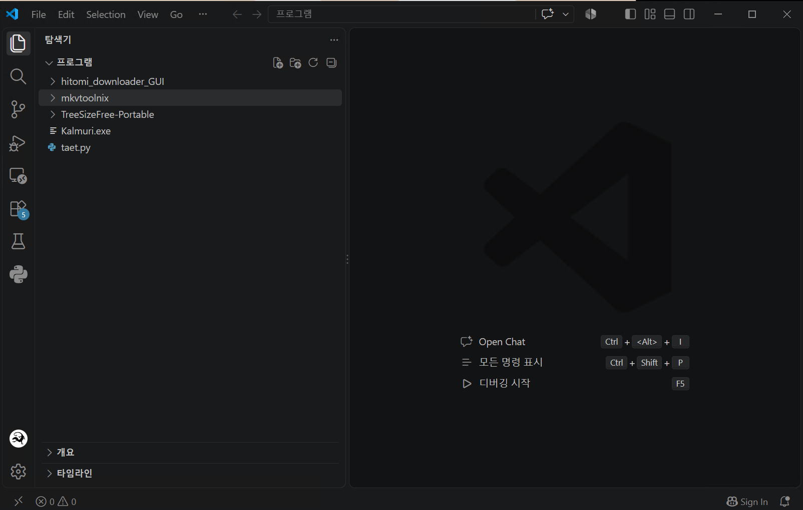

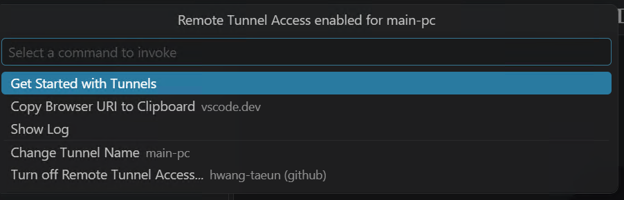

vscode.dev/tunnel/main-pc/e:/프로그램?vscode-lang=ko에서 main-pc는 터널 이름, 그 뒤는 집 PC VS Code에 열려 있던 폴더입니다. 언리얼 프로젝트로 바로 가려면 경로 부분만 바꾸면 됩니다.
https://vscode.dev/tunnel/main-pc/e:/UE/MyProject?vscode-lang=ko6태블릿에서 접속
📱 태블릿여기부터는 집 PC를 직접 만질 필요가 없습니다.
- 브라우저에서 위 주소를 열고 같은 GitHub 계정으로 로그인합니다. 즐겨찾기에 추가해 둡니다.
- 알림의 작업 영역 열기를 눌러 MyProject와 UE5 폴더가 함께 보이는 작업 영역으로 전환합니다.
- 제한 모드를 해제합니다. 신뢰 목록에 엔진 폴더, 프로젝트 폴더, 작업 영역 파일이 모두 등록되면 됩니다.
- 확장 탭에서 C/C++를 main-pc에 설치합니다. 원격 접속에서는 C/C++ 같은 확장이 코드가 있는 집 PC 쪽에서 실행되기 때문에, 태블릿이나 집 PC 로컬에 설치한 것과 별개로 한 번 더 설치해야 합니다.
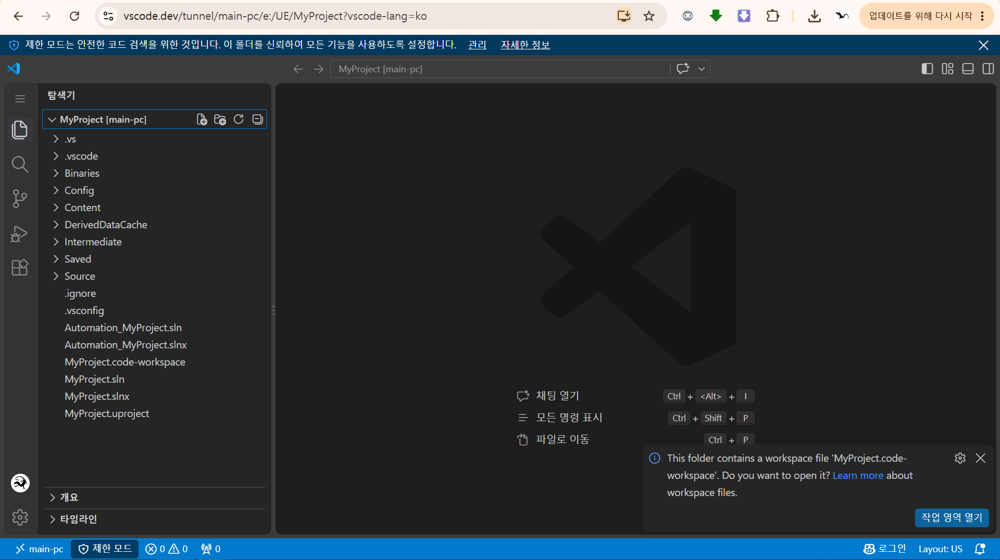
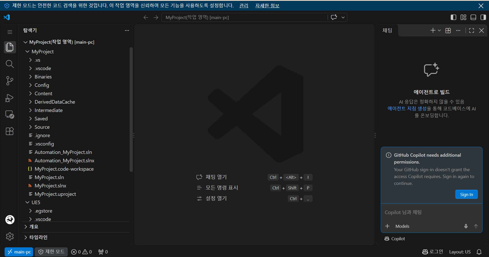

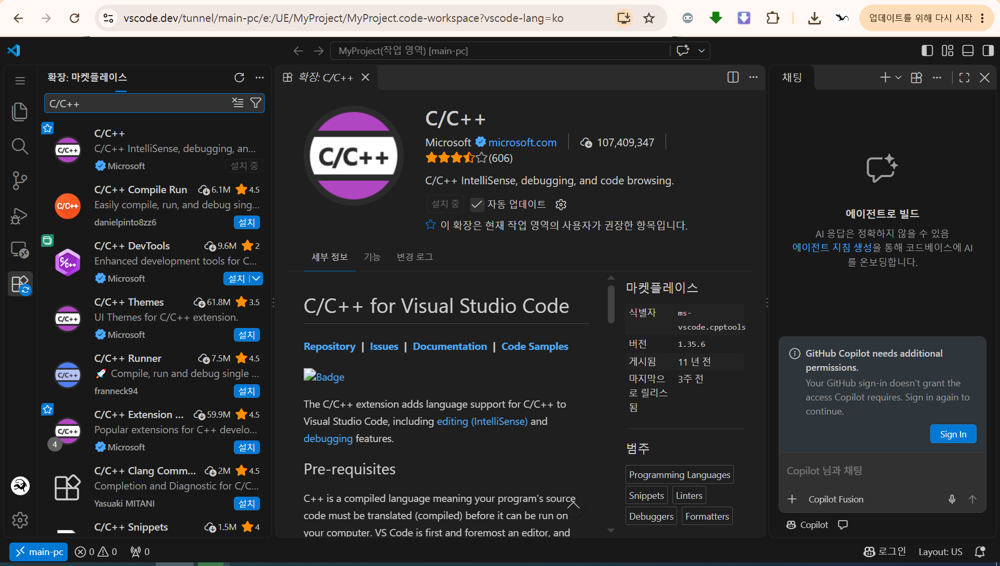
7원격 빌드
📱 태블릿에서 명령하면 🖥️ 집 PC에서 컴파일됩니다.
방법 A: 빌드 작업 (추천)
Ctrl+Shift+P→ 작업: 기본 빌드 작업 구성 →MyProjectEditor Win64 Development Build를 한 번만 지정합니다.- 이후에는 코드 수정 →
Ctrl+S→Ctrl+Shift+B만 반복합니다.
방법 B: 터미널에서 직접
cd E:\UE\MyProject
$UE = "C:\Program Files\Epic Games\UE_5.8"
$PROJ = "$PWD\MyProject.uproject"
$NAME = "MyProject"
$BUILD = "$UE\Engine\Build\BatchFiles\Build.bat"
& $BUILD "${NAME}Editor" Win64 Development -Project="$PROJ" -WaitMutex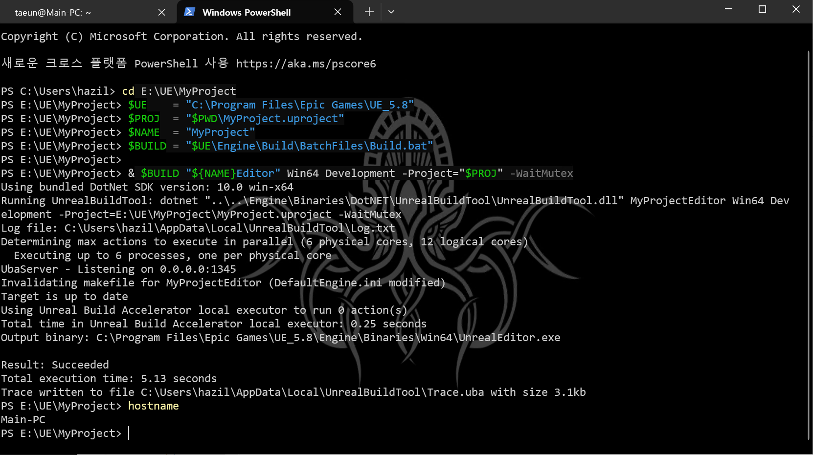
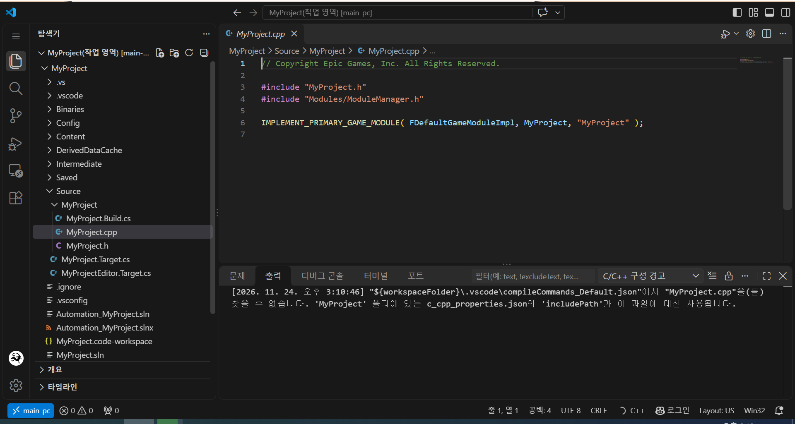
실제 컴파일 확인 로그
Using Visual Studio 14.44.35230 toolchain (...\MSVC\14.44.35207) and Windows 10.0.26100.0 SDK
Using Unreal Build Accelerator local executor to run 11 action(s)
[8/11] Compile [x64] SharedPCH.Engine.Project.ValApi.ValExpApi.Cpp20.cpp
[9/11] Compile [x64] MyProject.cpp
[10/11] Link [x64] MyProject.exe
[11/11] WriteMetadata MyProject.target [NoUba]
Output binary: E:\UE\MyProject\Binaries\Win64\MyProject.exe
Result: Succeeded
Total execution time: 73.40 secondsMyProject.cpp가 집 PC에서 MSVC 14.44로 컴파일됐습니다. 오간 데이터는 텍스트뿐입니다.트러블슈팅
진행 중에 실제로 겪은 문제들입니다.
① 파일을 엉뚱한 위치에 만듦
MyProject.cpp를 새로 만들고 주석만 넣음언리얼은 Source/ 폴더 안의 모듈 코드만 빌드합니다. 최상위 파일은 삭제하고 Source/MyProject/MyProject.cpp를 수정해야 합니다. 화면 위쪽 경로(breadcrumb)가 MyProject > Source > MyProject > MyProject.cpp인지 확인하세요.

② 'cl.exe'은(는) 내부 또는 외부 명령이 아닙니다
Ctrl+Shift+B 목록 맨 위의 C/C++: cl.exe 활성 파일 빌드를 선택함. C/C++ 확장이 자동으로 만든 단일 파일 빌드 작업이라 언리얼 프로젝트에는 쓸 수 없습니다.해결: 기본 빌드 작업을 MyProjectEditor Win64 Development Build로 지정합니다. 로그의 깨진 글자는 한글 인코딩(CP949) 문제일 뿐입니다.

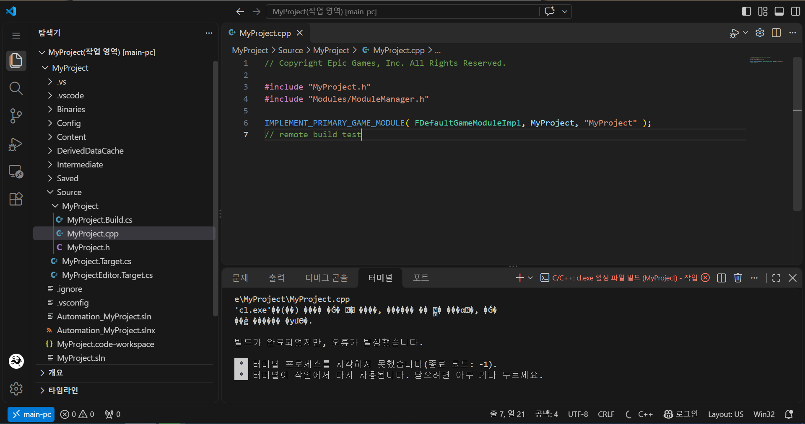
③ Targets cannot be built in the Debug configuration
| 구성 | 런처 엔진 | 용도 |
|---|---|---|
| Debug | ❌ | 엔진까지 디버깅 (소스 빌드 엔진 전용) |
| DebugGame | ✅ | 내 코드만 디버깅 |
| Development | ✅ | 평소 개발용 |
| Shipping | ✅ | 배포용 |
또 MyProject(게임 실행 파일)와 MyProjectEditor(에디터용)는 다른 타깃입니다. 에디터에서 쓸 코드는 MyProjectEditor로 빌드합니다.
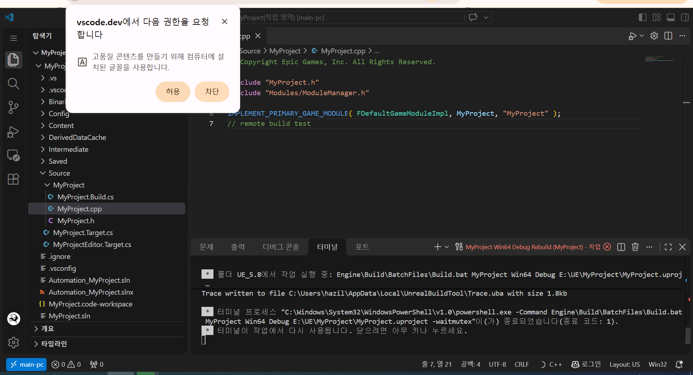
④ 기타
| 상황 | 해결 |
|---|---|
| UE 5.4에서 "컴파일러를 찾을 수 없음" | 5.4는 VS 2026을 인식하지 못함 → 5.8 이상 사용 또는 VS 2022 Build Tools 추가 설치 |
| 설치 전에 옵션 메뉴가 없음 | 엔진 구성 요소 옵션은 설치를 시작한 뒤 ▼ 메뉴에 나타남 |
| "VS Code 프로젝트 생성" 메뉴가 안 보임 | 소스 코드 에디터를 바꾼 뒤 에디터를 재시작해야 메뉴가 바뀜 |
| 원격 빌드가 파일 잠금으로 실패 | 집 PC에서 언리얼 에디터가 켜져 있으면 DLL이 잠김 → 에디터 종료 |
| C/C++ 구성 경고 (compileCommands 없음) | 첫 빌드 전에 나는 경고. 빌드 후 사라지며 무시해도 됨 |
일상 사용법
코드 작업 (데이터 거의 없음)
Ctrl+S→
Ctrl+Shift+B→
Result: Succeeded 확인
화면이 필요할 때만 스트리밍
블루프린트, 레벨 배치, 뷰포트 확인처럼 화면이 필요할 때만 Moonlight(+ Sunshine, Tailscale)를 잠깐 켭니다.
| 설정 | 시간당 데이터 |
|---|---|
| 10 Mbps (스트리밍 기본값 수준) | 약 4.5 GB |
| 5 Mbps | 약 2.2 GB |
| 2 Mbps (720p, 30fps) 추천 | 약 0.9 GB |
뷰포트 Realtime 끄기, Use Less CPU when in Background 켜기, 단색 바탕화면을 쓰면 화면 변화가 줄어 실제 사용량은 더 적어집니다.
체크리스트
- 집 PC 절전 모드 "안 함"
- 원격 빌드할 때는 집 PC 언리얼 에디터 종료
- 기본 빌드 작업은
MyProjectEditor Win64 Development Build - 코드는 항상
Source/안에서 수정